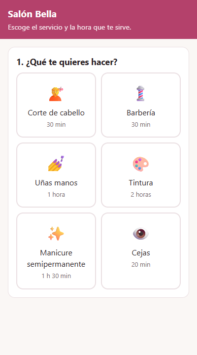
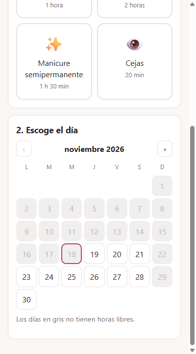
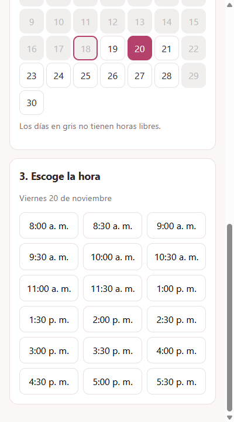
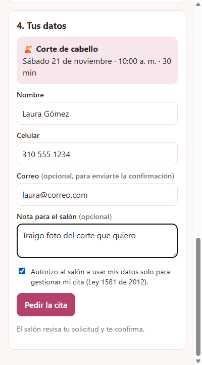
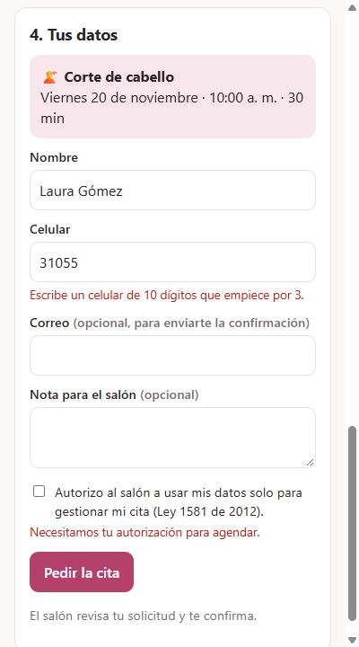
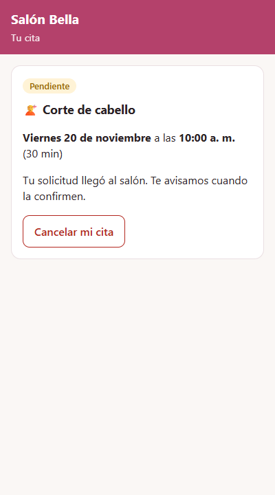
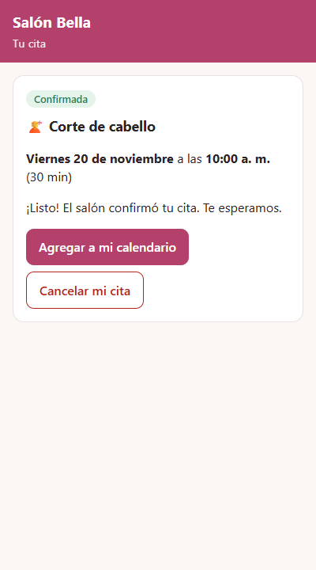
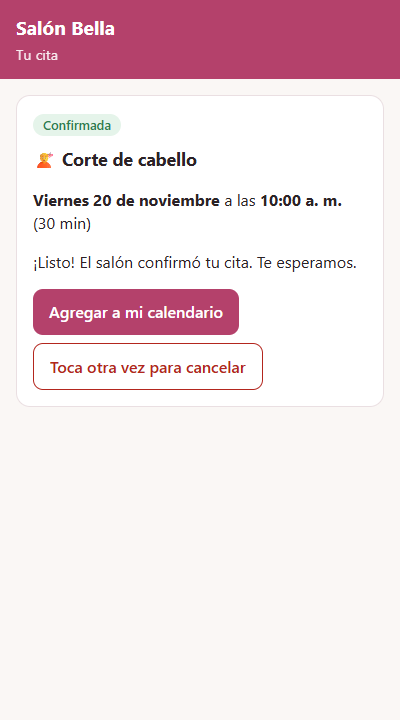

Escoge el servicio
Abre el link que te dio el salón. Verás el menú con lo que ofrecen: corte, barbería, uñas, tintura…
Debajo de cada uno dice cuánto dura. Toca el que quieres.

Escoge el día
- Los días en blanco tienen horas libres. Tócalos.
- Los días en gris no se pueden escoger: el salón está cerrado o ya está lleno.
- El día de hoy tiene un borde de color.
- Con la flecha › pasas al mes siguiente.

Escoge la hora
Solo aparecen las horas en las que el salón alcanza a atenderte, según lo que dura tu servicio.
Toca la hora que te sirve. Queda marcada en color.

Escribe tus datos
Arriba ves el resumen: servicio, día y hora. Revísalo y llena:
- Nombre.
- Celular: 10 números, empezando por 3. Puede ir con o sin espacios.
- Correo: opcional.
- Nota para el salón: opcional. Por ejemplo: "Traigo foto del corte que quiero".
Marca la casilla de autorización de datos y toca Pedir la cita.

Si algo sale en rojo
Te falta un dato o está mal escrito. El mensaje te dice qué corregir. Por ejemplo: "Escribe un celular de 10 dígitos que empiece por 3".
Corrígelo y el mensaje rojo desaparece. Luego toca otra vez Pedir la cita.
💡 Si mientras llenabas tus datos otra persona tomó esa misma hora, la agenda te avisa y te deja escoger otra.

Espera la confirmación
Tu cita queda Pendiente. Eso quiere decir que el salón ya la recibió y la está revisando.
Cuando el salón responde, la cita cambia a:
- Confirmada: ¡listo, te esperan!
- Rechazada: el salón no puede a esa hora. Si te dejaron un motivo, aparece ahí. Toca Pedir otra cita y escoge otra hora.

Guárdala en tu calendario
Con la cita confirmada, toca Agregar a mi calendario. Se guarda en el calendario de tu celular y te avisa 2 horas antes.

¿No puedes ir? Cancela
Toca Cancelar mi cita. Para que no la canceles por error, el botón cambia a "Toca otra vez para cancelar". Tócalo de nuevo.
Cancelar a tiempo deja esa hora libre para otra persona. ¡El salón te lo agradece! 💜
Resumen
- Servicio → día → hora.
- Tus datos → Pedir la cita.
- Espera que diga Confirmada y guárdala en tu calendario.